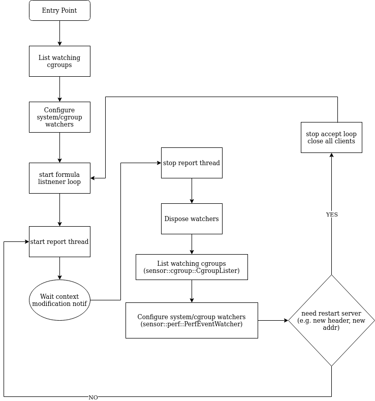
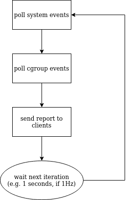
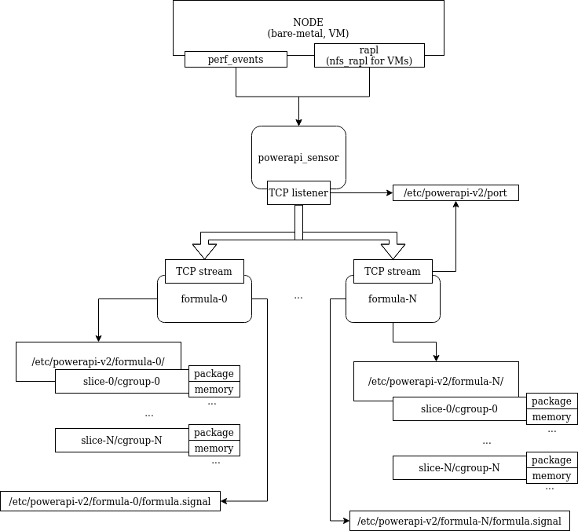

Welcome to vJoule's documentation
Nowadays, developers are more and more aware of the environmental cost of the software and infrastructures they build and deploy.
vJoule is a tool that allows you to measure the energy consumptions of running processes. Under the hood, vJoule will estimate the energy consumption of all monitored processes based on the current energy consumption measured on your computer.
You will find here all the informations you need to get started with vJoule.
vJoule is a tool developed at Davidson Consulting and inspired by other tools like PowerAPI.
Getting started
This section will help you get started with vJoule.
You'll learn how vJoules works, how to install it and how to test it.
What is vJoule?
vJoule is a tool that can be used to estimate the energy consumption a set of running processes. Technically, vJoule is built from two components:
- The sensor, responsible to collect different metrics (current energy consumption of the host and performances counters)
- The formula, responsible to estimate the energy consumption of each monitored processes, based on the informations gathered by the sensor.
It a nutshell, vJoules split the energy consumption of the host (via the sensor) among the monitored processes (via the formula).
You currently have two ways to interact with vJoule :
- As a command line interface : useful for easy and quick usage
- As a linux service : useful if you want to interact with vJoule in a program
Current limitations
vJoule cannot be used inside a virtual machine as it needs direct access to the hardware.
Installation
From .deb (recommended)
vJoule can be installed from deb files found in the Github releases. The vjoule_<VERSION>.deb package will install three systemd services: vjoule_sensor (that will gather the required hardware infos) and vjoule_simple_formula (responsible for the actual estimations of the energy consummed by the monitored processes), vjoule_dumping_formula (a secondary formula, used for debugging purposes).
You can install the .deb file (once downloaded) by running dpkg -i vjoule_<VERSION>.deb.
From sources
vJoules uses CMake as a build tool.
You will need to have installed cmake, g++ and git.
First tests
Now that vJoule is installed on your computer, let's try it. Remember that vJoule is available through two interfaces:
- A command line interface, useful for simple and quick usage
- A linux service, useful if you need to embeed vJoule in a program
vJoule, through the command line interface (CLI)
vJoule CLI is conveniently called vjoule. You can use it to estimate the energy consumption of a given command, like this:
$ # Here, ls is not a subcommand of vjoule
$ # We mesure the energy consummed by the ls command execution
$ vjoule ls
You can also use vjoule on a command that needs parameters. In this case, we will estimate the energy consumption of the stress command.
$ vjoule stress --cpu 2 --timeout 2s
Of course, you can use vjoule while executing, let's say, a python script.
$ vjoule python myscript.py
vJoule, through the service
As the CLI can be a bit limited for embeeding vJoule in a program, vJoule is available through a linux systemd service.
You'll need to start both sensor and formula first:
$ sudo systemctl start vjoule_sensor
$ sudo systemctl start vjoule_simple_formula
You can verify that both services are up either by checking with systemctl:
$ sudo systemctl status vjoule_sensor
$ sudo systemctl status vjoule_simple_formula
Or by checking for the logs of both services:
$ cat /etc/vjoule/sensor.log
$ cat /etc/vjoule/simple_formula.log
By default, vJoule is configured for monitoring the energy consumption of its two services. To see how much energy uses the formula, have a look in the directory /etc/vjoule/simple_formula/vjoule.slice/vjoule_simple_formula.service. You'll see several files where are stored the current energy consummed by the formula on different components of your computer. By printing the content of the package file, you will see the energy consummed by the CPU to run the formula. Other files may be empty because your hardware do not expose those informations.
Check out the tutorial section of this book to learn how to use vJoule to monitor the energy consumption of your own processes.
User Guide
In this section, you will learn more about the concepts and technical details about vJoule. In particular:
- vJoule uses cgroup to know which process to monitor. But what are cgroups?
- Where are the main configuration files of vJoule? Where to find the different energy consumption estimations?
- How can I fetch results from within a program?
- A another formula (the dumping formula), used to print directly the performances counters the sensor fetch.
cgroups
vJoule monitor the energy consumption of processes through their cgroup. In a nutshell, a cgroup if a set of linux processes. Cgroups can be used to limit the resources usage of a set of running processes. With vJoule, you can estimate the energy consumption of a set of processes by putting them in a cgroup and asking vJoule to monitor this cgroup.
For instance, all processes related to vJoule (the sensor and the formula) are by default attached to the vjoule cgroup.
If you want to monitor the energy consumption of a given process, you will need to attach this process to a cgroup (the vjoule cgroup or one you've created) and configure the formula to monitor this cgroup (reminder: the configuration file is stored in /etc/vjoule/simple_formula/config.toml).
For instance, let's say you want to measure the energy consumption of the API you've built. This can be done in command line like this:
$ # Create a cgroup "api" in a "measurements" slice (a group of cgroup)
$ sudo cgcreate -g cpu:measurements.slice/api
$ # The "measurements" slice could contains other components of you application
$ # Like the database for instance
$ # To do so :
$ sudo cgcreate -g cpu:measurements.slice/database
$ # Run a command that will be attached to the api cgroup
$ sudo cgexec -g cpu:measurements.slice/api mycommand
$ # OR
$ # Attach an existing process, by its pid, to the api cgroup
$ sudo cgclassify -g cpu:measurements.slice/api mypid
$ # TIP : For a process with multiple PIDs, you can use pidof like:
$ sudo cgclassify -g cpu:measurements.slice/api `pidof apache2`
Should you use cgexec or cgclassify? It depends on your context. If you want to monitor a running process like a webserver, use cgclassify with the webserver's pid. If you want to run a command and see how much energy it consummed during its execution, use cgexec.
You don't want to use those linux commands directly? There is chances you can find librairies to manage cgroups in your favorite programming language.
As you've seen you can create a hierarchy of cgroups that will be monitored by vJoule (here you need to add measurements.slice to the monitored cgroups in the sensor configuration).
Files of interests
Once vJoule is installed, you should find a directory for each vJoule services. Those directories (located in /etc/vjoule) contains configurations, logs and results. For example, the sensor configuration is located in /etc/vjoule/sensor and the simple formula configuration is located in /etc/vjoule/simple_formula.
Configuration files and logs
Log files
/etc/vjoule/sensor.log: the log file of thestd_sensor,/etc/vjoule/simple_formula.log: the log file of thesimple_formula
Configuration files
/etc/vjoule/sensor/config.toml: the configuration file of thestd_sensor. It can be modified to change the sensor log level and the list of cgroup monitored,/etc/vjoule/simple_formula/config.toml: the configuration file of thesimple_formula. It can be modified to change the formula log level.
Energy estimation results
/etc/vjoule/simple_formula/MYCGROUP/ contains the energy consumption estimation of the cgroup MYCGROUP. This where you will find the informations you're looking for.
By default, vJoule is configured to monitor its own services in a cgroup named vjoule.slice. The energy consumption of the sensor will then be stored in self-updating files located in /etc/vjoule/simple_formula/vjoule.slice/vjoule_sensor.service.
vJoule will give you up to five results files:
- memory - The energy consumption of the RAM
- package - The energy consumption of the CPU
- pp0 - The energy consumption of the CPU cores only
- pp1 - The energy consumption of the CPU uncores and last level cache
- psys - The energy consumption of the CPU socket
The main estimation of interest is package, that correspond to the energy consummed by the CPU for running your process. Other values are not always available, depending on what your hardware exposes.
The value stored in the file correspond to the energy consumption, in joule, since vJoule have started monitoring this process.
Signal file
The values in the result files are updated periodically by the formula. To ensure you do not miss a currently writting value while measuring the energy consumption of a task, you will need to use the signal file. This file, located in /etc/vjoule/simple_formula/formula.signal, is updated each time the formula has written new values. You can watch this file with inotify (see the examples for different programming languages in the pullers).
Pullers
We have implemented several pullers programs that will fetch the results. Feel free to use them (see the dedicated section in the documentation).
The dumping formula
The dumping formula is a different formula that can be used to dump selected performances counters in a CSV file. You can use the dumping formula in combination with the sensor.
Starting the dumping formula
Assuming you already have installed vjoule, you should be able to start the dumping formula as a linux service:
$ # if not already done, start the sensor
$ sudo systemctl start vjoule_sensor
$ sudo systemctl start vjoule_dumping_formula
Finding results
The dumping formula will dump every performances counters sent by the sensor in a CSV file. This file can be found in the dumping formula's directory, in /etc/vjoule/dumping_formula
Select the performances counters you want
The sensor fetch two performances counters by default (the number of hardware cpu cycle and the number of last level cache misses). You choose whatever performances counters you want by configuring the sensor (through its configuration file, found in /etc/vjoule/sensor/config.toml).
Please keep in mind that there is some restrictions in the number of performances counters you can query at the same time, especially if you have hyper threading activated on your computer. If you get a lot of zeros in the results, chances are that you tried to select too much performances counters. Try to remove some.
Tutorial
This section aims to provide practical tutorials to learn to use vJoule for your experiments.
Measuring the energy consumption of your program
In this tutorial, we will learn to use vJoule to measure the energy consumption of a simple python script. Please make sure that vJoule is already installed on your computer.
Your program to evaluate
Let's say you want to measure the energy consumption of the following python script.
import sys
# Compute the value of Pi.
# A higher value of prec will lead to a higher precision.
def computePi(prec):
res = 0
for i in range(prec):
res += (4.0 / prec) / (1.0 + ((i - 0.5) * (1.0 / prec)) * ((i - 0.5) * (1.0 / prec)))
return res
if __name__ == "__main__":
if len(sys.argv) < 2:
print("Usage: python compute_pi.py precision")
else:
print(computePi(int(sys.argv[1])))
Using vJoule CLI
Using vJoule CLI is pretty straightforward, just run python with vJoule:
$ vjoule python compute_pi.py 1000
Using vJoule linux service
vJoule linux service offers a more flexible solution.
Making sure that vJoule services are up
We will first make sure everything is running with the following commands:
$ sudo systemctl status vjoule_sensor
$ sudo systemctl status vjoule_simple_formula
If one or both services are not running, start them:
$ sudo systemctl start vjoule_sensor
$ sudo systemctl start vjoule_simple_formula
Creating a cgroup for our process
Remember that vJoule uses cgroups to know which processes to monitor. For a quick introduction to cgroups, refer to the dedicated section in the user guide.
vJoule needs at least a two level cgroup hierarchy. We can organize it as follows:
- A cgroup named
measurements.slicefor our test, - Inside
measurements.slice, a cgroup namedcompute_piin which we will attach our python script.
This can be done with cgcreate:
$ sudo cgcreate -g cpu:measurements.slice/compute_pi
We will configure vJoule to monitor the energy consumption of each cgroups present in measurements.slice. To do so, we will edit our sensor's configuration (present in /etc/vjoule/sensor/config.toml) by adding measurements.slice to the list of cgroups.
vJoule will now reload itself and create a result directory for our cgroups, in /etc/vjoule/simple_formula/measurements.slice. Inside, you should have a compute_pi directory with a file for every energy value (memory, package...).
Now, we can run our python script inside our compute_pi cgroup. This can be done with cgexec:
$ sudo cgexec -g cpu:measurements.slice/compute_pi python compute_pi.py
Getting the results
You should now have a non-zero value in results files. If some are empty, that's because your computer does not support the energy monitoring of the related component. You should have at least a result for in the package file that correspond to the CPU consumption.
The value present in the results files are expressed in Joules. It correspond to the amount of energy consummed since vJoule started to monitor the related cgroup.
Fetching the results in a program
We have implemented several pullers programs that will fetch the results. Feel free to use them.
API Reference
This section present technical details on how vJoule works under the hood, especially the communication protocols between the sensor and the formula.
Sensor
The sensor is the part of vjoule retreiving perf_events. It
divides the perf_events in to subgroups, system and cgroups. The
sensor works with cgroup v2. An adaptation for cgroup v1 should be
relatively easy.
Installation
The sensor uses the patched version of the libpfm. This
patched version can be found in the directory patch_libpfm, and is
compiled and linked automatically using the cmake files.
./deb/create-deb.sh
sudo dpkg -i ./build/vjoule_1.0.deb
The sensor binary is installed in
/usr/bin/vjoule_sensor. Configuration files are put in
/etc/vjoule/. A service file is put in /etc/systemd/system/vjoule_sensor.service
Uninstallation
sudo dpkg -r vjoule-1.0
Usage
The sensor is a service, that is started using the command :
sudo systemctl start vjoule_sensor.service
And stopped :
sudo systemctl stop vjoule_sensor.service
Configuration
The configuration of the sensor is made using a toml file. An
example of this file is presented below. The configuration file has to
be located in /etc/vjoule/sensor/config.toml. Basically, every file
read or generated by the sensor are located in the directory
/etc/vjoule/. Configuration file must be present but every
parameters are optional and have a default value.
[sensor]
addr = "0.0.0.0:0"
freq = 1.0
log-lvl = "info"
log-path = "/etc/vjoule/sensor.log"
[cgroups]
slices = ["custom.slice"]
[events]
system = ["RAPL_ENERGY_PKG", "TSC", "APERF", "MPERF"]
cgroups = ["CPU_CLK_THREAD_UNHALTED:REF_P",
"CPU_CLK_THREAD_UNHALTED:THREAD_P",
"LLC_MISSES",
"INSTRUCTIONS_RETIRED"]
-
sensordefines information about the sensor deamon.-
addris the address on which the sensor is listening for formulas to connect. By setting its port value to0, it will get the first port that is available. The used port is defined in/etc/vjoule/port. Default value is0.0.0.0:0. -
freqdefines the frequency in Hz of the sensor (number of report sent by seconds to the formulas). Default value is1.0 -
log-lvldefines the level of the logger, default value issuccess, possible valuesnone < error < warn < info < success < strange < all. -
log-pathdefines the path of the log file, default is empty which means to stdout. -
max-open-filesdefines the number of file descriptor the process can open, default is 65535. This is a linux limit, when there many cgroup to observe we need to open more than 1024 files (default linux limit). -
poll-freqapplicable only in nfs mode (sensor inside virtual machines). Defines the speed of the polling, to discover the new reports from the host formula. (nfs does not implement inotify, so we need to poll to check for modifications).
-
-
cgroupsdefines information about the cgroup watched by the sensor.slicesdefines the list of slices watched by the sensor. Other slices are ignored. For example, by definingslices=["custom.slice"], all sub cgroups insidecustom.slice(custom.slice/my-cgroup,custom/my-second-cgroup) are watched, but not directlycustom.slice. It is also not recursive, socustom.slice/sub.slice/testis watched throughcustom/sub.slicebut not directly.
-
eventsdefines the list of event being watched by the sensorsystemthe list of system event being watchedcgroupsthe list of events being watched for every cgroup being watched by the sensor
Report protocol
Reports are sent to all the formulas connected to the address of the sensor. The protocol is in raw data, so it should be only be read using a formula written with the same protocol. There are two different kind of packet that can be sent. The header, sent when a new connexion is made. And the packet sent whenever a report is available.
Protocol implementation is made in the common::net namespace.
Header
The byte description of the header :
| offset | size | type | content |
|---|---|---|---|
| 0 | 4 | int | the size of the whole packet packet_size |
| 4 | 4 | int | nb entries |
| 8 | packet_size - 8 | [(short, int, [char])] | content of the header |
The content of the header is a map of metric names (list of pairs) :
| offset | size | type | content |
|---|---|---|---|
| 0 | 2 | short | The id of the metric |
| 2 | 4 | int | size of the metric names metric_name_size |
| 6 | metric_name_size | [char] | the metric name |
An example of header packet (int are written in full text to be readable, but are sent in raw by the sensor) :
| packet size | nb entries | id | name size | name | id | name size | name | id | name size | name | id | name size | name |
40 4 0 15 RAPL_ENERGY_PKG 1 3 TSC 2 5 APERF 3 5 MPERF
Report
The byte description of a report packet :
| offset | size | type | content |
|---|---|---|---|
| 0 | 4 | int | the size of the whole packet packet_size |
| 4 | 4 | float | energy pp0 in Joules |
| 8 | 4 | float | energy pp1 in Joules |
| 12 | 4 | float | energy pkg in Joules |
| 16 | 4 | float | energy dram in Joules |
| 20 | 4 | float | energy psys in Joules |
| 24 | 4 | int | number of global metric nb_system_metrics |
| 28 | nb_system_metrics * (2 + 8) | [(short, long)] | list of system metrics values |
| 4 | int | nb cgroups nbcgroups | |
packet_size - (nb_system_metrics * (2 + 8) + 4) | [cgroup content] | cgroup metrics |
The cgroup metrics is a list of cgroup names and metrics values :
| offset | size | type | content |
|---|---|---|---|
| 0 | 4 | int | cgroup name size name_size |
| 4 | name_size | [char] | the name of the cgroup |
name_size + 4 | 4 | int | nb metrics nb_metrics |
name_size + 8 | nb_metrics * (2 + 8) | [(short, long)] | metrics values |
An example of report packet :
| packet size | energy pp0 | energy pp1 | energy pkg | energy dram | energy psys | nb system metrics | id | value | id | value | nb cgroups | name size | name | nb metrics | id | value | id | value | name size | name | nb metrics | id | value | id | value |
113 12.1 0.001 10.92 1.4 0 2 0 98108989378 7 189082738 2 4 test 2 3 17878329 9 189789326 5 test2 2 3 8717896178 9 1878718897
Sensor C++ implementation
This chapter presents the design of the c++ implementation of the
sensor. It uses the common library for net communication, and some
other utilities. It is link to the libpfm library, in the
patch_libpfm directory, that is a patch of the libpfm to manage MSR
events.
The idea of the following sub chapters is to present an overview of the implementation, so that the relationships between classes and functions are easier to understand, but does not aim to present the full documentation (i.e. function prototypes etc.).
class sensor::Sensor
This class contains the main part of the sensor. It runs 3 threads (main, and two separate threads).
Main thread
The main thread is responsible of the creation of the configuration,
and is able to start/stop the other two threads if needed (by a
configuration update for example). It waits a notification from
sensor::Notifier, that is triggered by a modification of the context
(creation or deletion of a cgroup, modification of the configuration
file, etc.).

Listing, and configuring the watchers is made in the function
Sensor::configure. This function should be called within this-> _mutex locking, as it is not done inside the function itself.
Methods Sensor::createHeader and Sensor::createPacket pre
allocates the memory of the packet for the memory polling, to gain
some time, by avoiding allocation during the event polling. The packet
that is created is used in the report thread.
Method Sensor::onContextChange is the slot connected to the
sensor::Notifier. This function updates everything (middle and right
parts of the above diagram).
Accept formula thread
This thread is pretty simple, it simply wait for new incoming
connexions from formulas, and register them as clients. This thread
uses a net::TcpListener, and create net::TcpStream when clients
are connected.
This is in this thread that net::Header is transmitted to the
clients.
Report thread
The report thread uses the perf watcher
sensor::perf::PerfEventWatcher created by the main thread, and sent
the result to the client connected in the accept thread
net::TcpStream. Client deconnexion is managed in this thread.

This thread send net::Packet to clients.
class sensor::Notifier
This class is used to wait for modification in term of cgroup filesytem, or configuration file. The idea being, that by using system waits, less cpu usage is required, and it is therefore not necessary to read all the cgroup topology at each report iteration.
This class uses the inotify system, to wait for modification of both
config::cgroups::mnt (defined in the configuration file, or
/sys/fs/cgroup by default), and the configuration file
/etc/vjoule/config.toml. This is set by calling
Notifier::configuration method.
When a modification happens a signal is emitted. This signal can be
connected to any slots. Notifier::onUpdate ().connect (slot).
The notifier can be executed in sync mode (on the current thread),
or by spawning a thread, using the methods Notifier::startSync,
Notifier::start.
Disposing the notifier clear the inotify watchers.
class sensor::perf::PerfEventWatcher
This class is configuring and polling the values of the perf_event
being watch for a given cgroup. If no cgroup is configured
(PerfEventWatcher::_cgroupPath == ""), then system events are watched.
Configuration
The configuration PerfEventWatcher::configure is made with a list of
event names (e.g. RAPL_ENERGY_PKG, LLC_MISSES, ...). Multiple
perf_event are grouped, so there is only one reading to
make. Perf_event watching for cgroup is made per cpu, as it is
impossible (apparently) for libperf to watch the event of multiple cpu
core for a cgroup in a single file descriptor. So there is one file
descriptor per cpu core, and this file descriptor is watching multiple
events at the same time.
Configuration uses utility functions
PerfEventWatcher::findPerfEventAttrs, that look up for the libpfm
attributes. Only available events are watched, meaning that a
PerfEventWatcher is working even if there are some undefined event
in the configuration. Undefined event are logged as errors.
Polling events
The polling of event is made using the file descriptors opened during
the configuration. There are two ways of polling events, with and
without cache. With cache is the prefered method
PerfEventWatcher::poll (vector<Metric>&) as it does not reallocate
memory, and is therefore more efficient.
The polling reset the metric values, the content of the metric is the number of events since the last poll.
Disposing
PerfEventWatcher opens many file descriptor that must be closed. For
that the class was written using the move semantic. Thus it is
impossible to copy a PerfEventWatcher, it must be moved std::move (watcher). All disposing are made automatically by the destructor of
the instance that has the ownership.
class sensor::cgroup::CgroupLister
Relatively simple class that traverse the cgroup tree, to retreive the names and path of the cgroups that must be watched by the sensor.
The class takes a common::utils::config::dict as parameters. This
configuration is the [cgroups] parts of the configuration file of
the sensor. CgroupLister::run returns the list of cgroup to watch.
Formulas
Formulas are the components responsible to infer the energy consumption of each monitored cgroup from the informations sent by the sensor. All formulas have the same behavior and work with the same interfaces.
Two formulas are currently available:
- simple formula, that split the overall energy consumption of the host for each monitored cgroup by doing a ratio between a selected performance counter (e.g the CPU time usage) and the RAPL value sent by the sensor,
- smartwatts formula, that uses a linear regression model to infer the energy consumption of monitored cgroup based on performances counters
Results
When the formula is running, it creates result files for each
monitored cgroups. These files are located in the mnt-path defined
in the configuration file. For example for the cgroup custom/test
and with mnt-path = "/etc/vjoule/simple_formula/", the
following result files are written :
/etc/vjoule/simple_formula/custom/test/packagethe cumulated energy consumption of the cgroup fromenergy_pkg(cpu consumption)/etc/vjoule/simple_formula/custom/test/memorythe cumulated energy consumption of the cgroup fromenergy_dram(memory consumption)
When new values are written to the cgroup result files, the formula
updates the file formula.signal located in mnt-path. This file
only contains a useless value, but is created so we can use the
inotify system to synchronise a puller easily. For example the
following script prints the package consumption of the cgroup
custom/test when new values are available.
while inotifywait /etc/vjoule/simple_formula/formula.signal; do
cat /etc/vjoule/simple-formula/simple_formula/custom/test/package
done
inotify is a basic linux system that can be used directly from a
program. Examples of pullers written in bash, C++, and in rust are available
respectively in puller/bash/, puller/c++/ and puller/rust.
The following diagrams gives an idea of how formulas interact with the sensor running on the machine, and how they provides results that can be used by pullers.

Simple formula
The simple formula is an example of very simple formula. This is how a formula should be implemented, where almost only the division algorithm should differ.
Installation
The formula is created in the same deb package as the sensor or other formulas.
./deb/create-deb.sh
sudo dpkg -i ./build/vjoule_1.0_no_nfs.deb
The formula binary is installed in
/usr/bin/vjoule_simple_formula. Configuration files are put in
/etc/vjoule/simple_formula/. A service file is put in
/etc/systemd/system/vjoule_simple_formula.service.
Unistallation
sudo dpkg -r vjoule-1.0-no_nfs
Usage
The simple formula is a service. It depends on the vjoule_sensor.service.
sudo systemctl start vjoule_simple_formula.service
And stopped :
sudo systemctl stop vjoule_simple_formula.service
Configuration
The configuration of the formula is made with a toml file. An example
of this file is presented below. The configuration file has to be
located in /etc/vjoule/simple_formula/config.toml. Basically,
every file read or generated by the formula are located in the
directory /etc/vjoule/. Configuration file must be present but
every parameters are optional and have a default value.
[formula]
log-path = "/etc/vjoule/formula.log"
log-lvl = "info"
mnt-path = "/etc/vjoule/simple-formula/"
reconf-sensor = true
formuladefines information about the formulalog-pathdefines the path of the log file, default is empty which means to stdout.log-lvldefines the level of the logger, default value is success, possible valuesnone < error < warn < info < success < strange < allmnt-pathdefines the directory that will receive the result of the formulareconf-sensor, if true the formula modifies the configuration file of the sensor to make sure it is monitoring the correct metrics. Can be enforced to false, when running two different formulas (for comparison for example).
Smartwatts formula
This formula is an implementation of the paper SmartWatts: Self-Calibrating Software-Defined Power Meter for Containers by Fieni et al., based on the original python implementation.
Concepts
This formula dispatch the energy consumption of the host (gathered by the sensor) based on performances events. Smartwatts uses a linear regression model to infer the power consumption of each monitored cgroup.
Installation
The formula is created in the same deb package as the sensor or other formulas.
./deb/create-deb.sh
sudo dpkg -i ./build/vjoule_1.0_no_nfs.deb
The formula binary is installed in
/usr/bin/vjoule_smartwatts_formula. Configuration files are put in
/etc/vjoule/smartwatts_formula/. A service file is put in
/etc/systemd/system/vjoule_smartwatts_formula.service.
Unistallation
sudo dpkg -r vjoule-1.0-no-nfs
Usage
The smartwatts formula is a service. It depends on the vjoule_sensor.service.
sudo systemctl start vjoule_smartwatts_formula.service
And stopped :
sudo systemctl stop vjoule_smartwatts_formula.service
Configuration
The configuration of the formula is made with a toml file. An example
of this file is presented below. The configuration file has to be
located in /etc/vjoule/smartwatts_formula/config.toml. Basically,
every file read or generated by the formula are located in the
directory /etc/vjoule/. Configuration file must be present but
every parameters are optional and have a default value.
[formula]
log-path = "/etc/vjoule/formula.log"
log-lvl = "info"
mnt-path = "/etc/vjoule/smartwatts-formula/"
reconf-sensor = true
formuladefines information about the formulalog-pathdefines the path of the log file, default is empty which means to stdout.log-lvldefines the level of the logger, default value is success, possible values none < error < warn < info < success < strange < allmnt-pathdefines the directory that will receive the result of the formulareconf-sensor, if true the formula modifies the configuration file of the sensor to make sure it is monitoring the correct metrics. Can be enforced to false, when running two different formulas (for comparison for example).
Implementing a new formula
To implement a new formula, you can use the Formula and Divider interfaces.
Formula template
The Formula template (present in the common::formula namespace) provides a bunch a functionnalities required to implement a formula, including:
- Communication with the sensor
- Reconfiguration of the sensor (if specific performances counters are needed)
- Export of the results as files
When implementing a new formula, you can directly use the Formula template parametrized with your own implementation of the divider. This is done as follows:
common::formula::Formula<my_formula::Divider> formula ("my_formula");
formula.run ();
Divider class
The Divider interface (present in the common::formula) namespace is the main class to implement when building your own formula. When provided as a parameter to a Formula, its main function divideConsumption will be called when processing packets sent by the sensor. The Divider interface provide the following meethods:
configure: configure the divider from the headerdivideConsumption: divide the power consumption from packet information into cgroup consumptiongetSystemMetrics: the list of necessary system metrics sent by the sensor for the divider to workgetCgroupMetrics: the list of necessary cgroup metrics sent by the sensor for the divider to work
The last two methods can be use to reconfigure the sensor to get the required performances counters.
Results
The results of your formula are put in the directory according to the
configuration file (mnt-path), by default its value is
/etc/vjoule/my_formula/.
Pullers
Pullers are programs acquiring the result computed by a formula in
order to display it, or use it for computation. There are example of
pullers in the directory puller/.
Bash puller/bash
This is the simplest puller that can be designed. It simple waits for
the simple_formula signals, and print the consumption of the cgroup
custom/test. (Cf. results)
C++ puller/c++
This c++ version of the puller is an example that read 100 formula
reports from the simple_formula. It prints the consumption of all
the monitored cgroup.
Rust puller/rust
This rust version is an infinite loop that prints the consumption of
all the monitored cgroup from the simple_formula.
Python puller/py
Python puller are more advanced puller, that can be used to display data in graphs or grafana.
to_plot
To plot pulls the results of a formula (given as parameter) and plot
the result into a figure. The program runs indefinitely until Ctrl-C
is pressed, then it save the results of the consumption into a line
graph.
$ python3 to_plot.py simple
09:51:34/0
Reading /etc/vjoule/simple_formula/custom/test
09:51:35/1
Reading /etc/vjoule/simple_formula/custom/test
09:51:36/2
Reading /etc/vjoule/simple_formula/custom/test
09:51:37/3
Reading /etc/vjoule/simple_formula/custom/test
09:51:38/4
Reading /etc/vjoule/simple_formula/custom/test
09:51:39/5
^C
Figure exported to out.jpg
formula names are used to create the path of result pulling, where
signal is located in
/etc/vjoule/${formula}_formula/formula.signal and results in
/etc/vjoule/${formula}_formula/.
to_influxdb
This puller saves the result into an influxdb instance, that can then be used to monitor the results using grafana.
$ python3 to_influxdb.py simple
09:58:19.607731
Reading : /etc/vjoule/simple_formula/vjoule.slice/vjoule_sensor.service
Reading : /etc/vjoule/simple_formula/vjoule.slice/vjoule_simple_formula.service
09:58:20.667710
Reading : /etc/vjoule/simple_formula/vjoule.slice/vjoule_sensor.service
Reading : /etc/vjoule/simple_formula/vjoule.slice/vjoule_simple_formula.service
09:58:21.667741
Reading : /etc/vjoule/simple_formula/vjoule.slice/vjoule_sensor.service
Reading : /etc/vjoule/simple_formula/vjoule.slice/vjoule_simple_formula.service
09:58:22.675729
Reading : /etc/vjoule/simple_formula/vjoule.slice/vjoule_sensor.service
Reading : /etc/vjoule/simple_formula/vjoule.slice/vjoule_simple_formula.service
09:58:23.679734
Reading : /etc/vjoule/simple_formula/vjoule.slice/vjoule_sensor.service
Reading : /etc/vjoule/simple_formula/vjoule.slice/vjoule_simple_formula.service
09:58:24.679768
Reading : /etc/vjoule/simple_formula/vjoule.slice/vjoule_sensor.service
Reading : /etc/vjoule/simple_formula/vjoule.slice/vjoule_simple_formula.service
09:58:25.667689
Reading : /etc/vjoule/simple_formula/vjoule.slice/vjoule_sensor.service
Reading : /etc/vjoule/simple_formula/vjoule.slice/vjoule_simple_formula.service
09:58:26.675723
Reading : /etc/vjoule/simple_formula/vjoule.slice/vjoule_sensor.service
Reading : /etc/vjoule/simple_formula/vjoule.slice/vjoule_simple_formula.service
Results are stored in localhost:8086 using user root in the
database vjoule-${formula}.